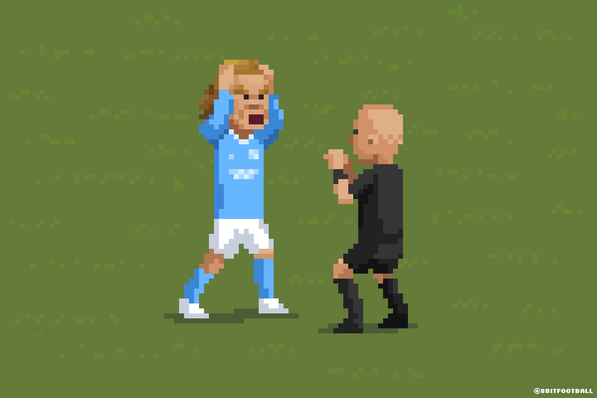

1. plass
Turneringens vinnere.
Loading KonfAction-turnering …
10 lag · 10 runder · konfirmasjonsliga

SPILL. GLEDE. FELLESSKAP.| # | Lag | K | S | U | T | Mål | MF | Poeng |
|---|
Se lagets fem siste seriekamper. Grønt er seier, grått er uavgjort og rødt er tap.
Prisene deles ut fem minutter etter finalen — kl. 14.15.
Turneringens vinnere.
Finalistene.
Vinnerne av bronsekampen.
Mer enn tre spillere må delta. Vis glede sammen og respekt for motlaget.
Turneringens flotteste scoring.
For innsatsen mellom stengene.
Ti lag spiller et fast kampoppsett over ni runder. Hvert lag spiller sju kamper. Ingen spiller mer enn to kamper på rad, og baner og kamprekkefølge er tilfeldig satt opp.
Etter niende runde låses sluttspilloppsettet når alle 35 seriekamper er avsluttet. 1. mot 2. plass spiller finale på bane 1; resten spiller plasseringskamper mot tabellnaboen.
Turneringen går kontinuerlig uten matpause. Spis gjerne sammen med laget mellom kampene. Finalen går 13.55–14.10 på bane 1, og premieutdeling starter 14.15.